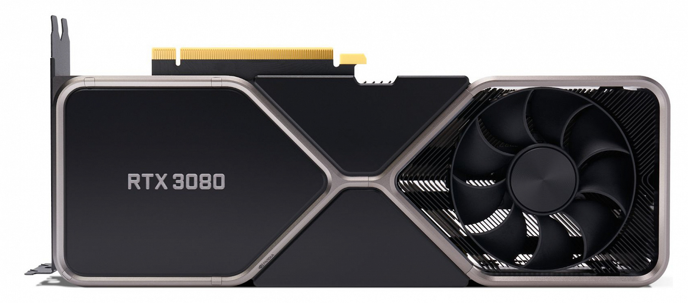

Видеокарта GeForce RTX 3080 обеспечивает рекордную производительность для геймеров, работая на базе Ampere — архитектуры NVIDIA RTX второго поколения. Она оснащена улучшенными ядрами RT и тензорными ядрами, новыми потоковыми мультипроцессорами и высокоскоростной памятью G6X для потрясающих игровых возможностей.
NVIDIA GeForce RTX 3080, базовая частота 1440 МГц, Turbo-частота 1710 МГц, 8704sp, частота памяти 19000 МГц, 320 бит, доп. питание: 8+8 pin, 2 слота, HDMI, DisplayPort
Основные
Интерфейс PCI Express x16 4.0
Производитель графического процессора NVIDIA
Графический процессор GeForce RTX 3080
Технические характеристики
Частота графического процессора 1 440 МГц
Turbo-частота графического процессора 1 710 МГц
Количество потоковых процессоров8 704
Видеопамять10 ГБ
Тип видеопамятиGDDR6X
Эффективная частота памяти 19 000 МГц
Пропускная способность памяти 760 ГБ/с
Ширина шины памяти 320 бит
Поддержка DirectX 12 Ultimate
Разъёмы питания8+8 pin
Рекомендуемый блок питания 750 Вт
Охлаждение активное
Толщина системы охлаждения 2 слота
Количество вентиляторов 2
Длина видеокарты 285 мм
Высота видеокарты 112 мм
Интерфейсы
HDMI
DisplayPort